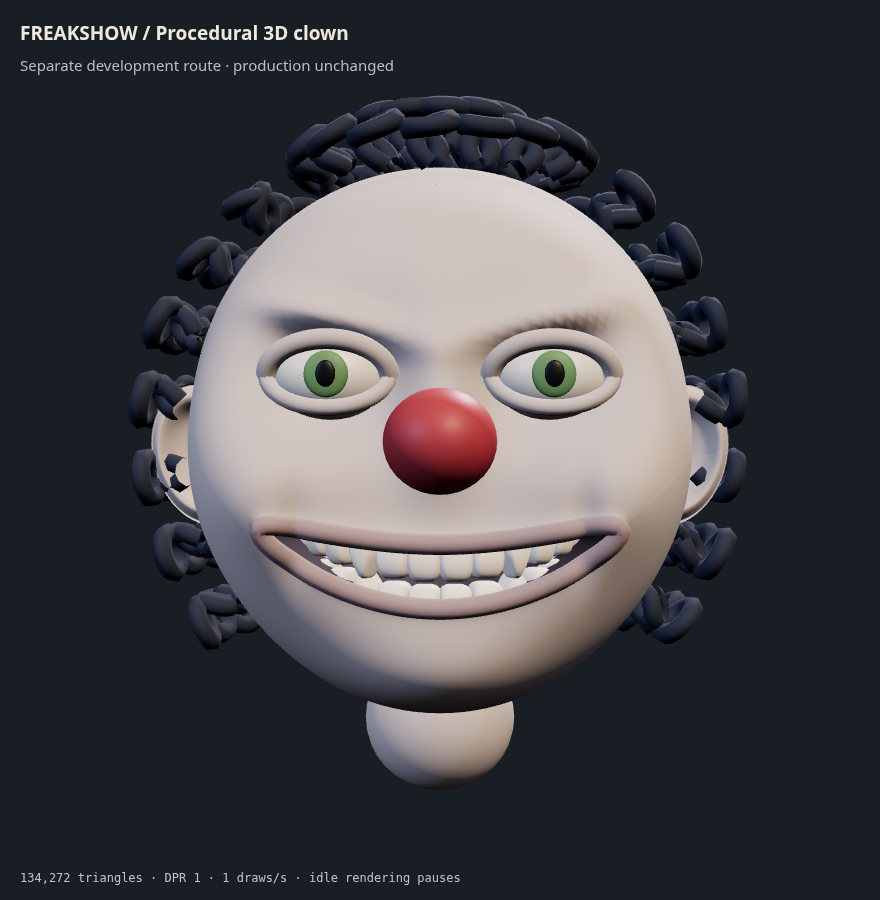
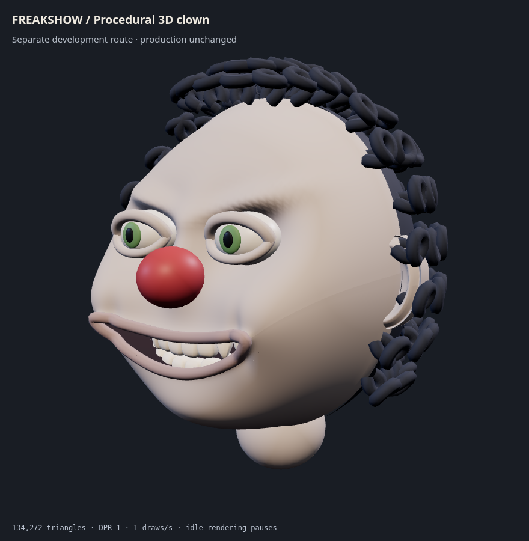
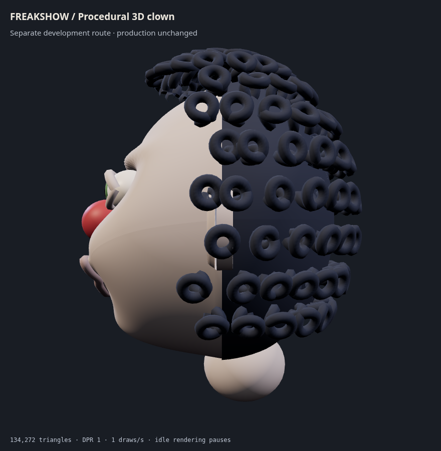
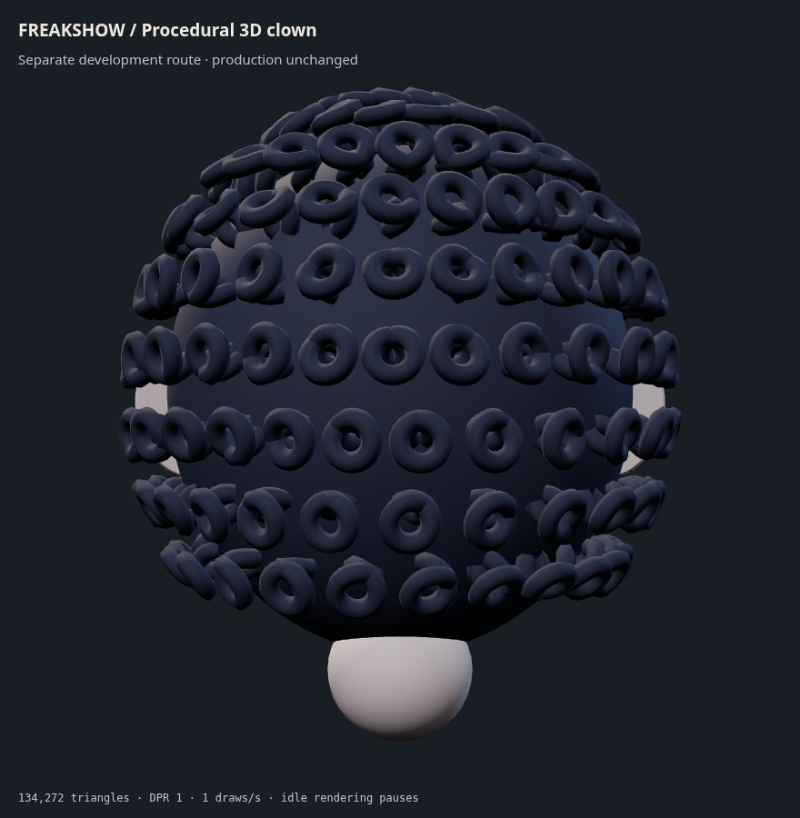
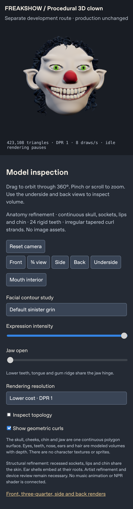

Structural refinement: compact skull, recessed sockets, integrated lips and
chin, folded ear shells and irregular open curl strands. All character
surfaces are genuinely three-dimensional. Production FREAKSHOW, camera
presets and lighting are unchanged. Open each previous-view comparison to
assess the geometry change. This is a procedural anatomy review, not a
finished sculpt or physical iPhone performance claim.
Compare previous front geometry

Front · default wide grinCompare previous three-quarter geometry

Three-quarter · facial depthCompare previous side geometry

Side · skull, nose and jaw profileCompare previous back geometry

Back · skull and dimensional curlsCompare previous underside geometryUnderside · jaw and chinJaw open · rigid teeth and mouth cavity

WebKit · iPhone viewport · DPR 1. Not a physical device test.